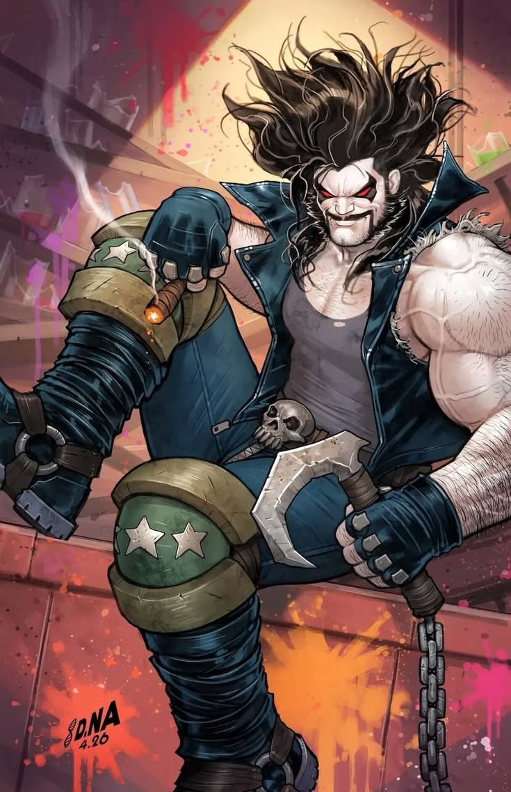
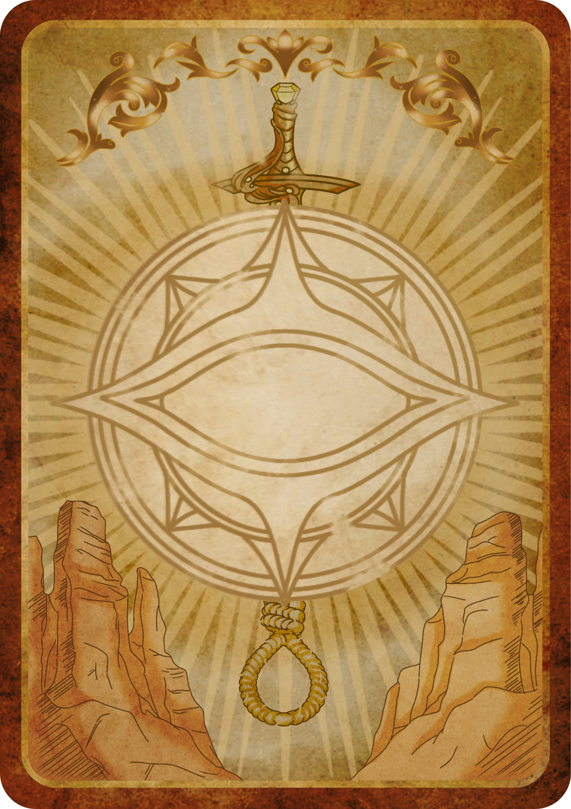

Presença, peso e distância
Compare os impactos, acompanhe o som da carta e ouça a nova limpeza da voz. Use fones ou caixas estéreo para perceber a posição.
Abrir o jogo · Biblioteca completa
FUNDO DA MESA Impacto próximo
Impacto próximo

Impacto distanteImpacto próximo
Pronto para comparar.
Voz em primeiro plano
A versão anterior está preservada. Compare a mesma frase com a nova versão seca, com redução do ruído e limpeza da entrada.